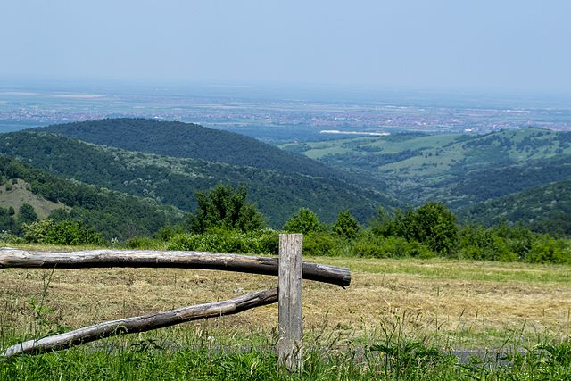

Fruška gora
Fruška gora je stara ostrvska planina u Srbiji u okviru koje se nalazi nacionalni park.
Odmaralište Zmajevac

Manastir Novo Hopovo

Korisni linkovi:
- Wikipedia
- Nacionalni Park Fruška Gora
- Turistička organizacija Grada Novog Sada
- Novi Sad StoryMap
Mapa
David Omorjan